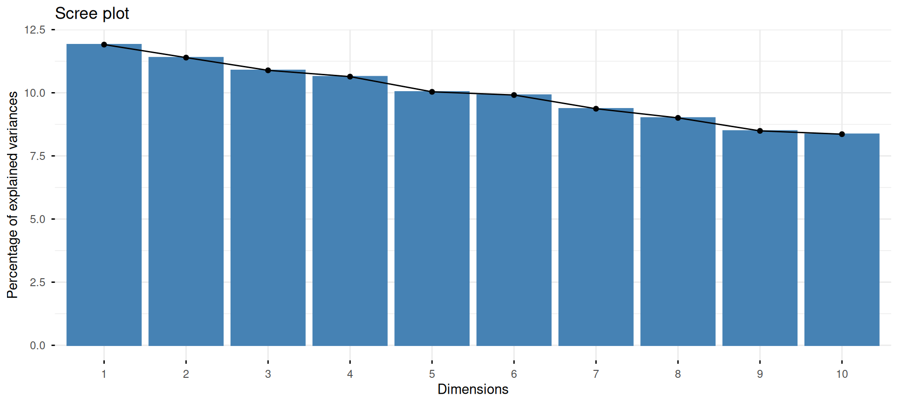

| Hours_Studied | Attendance | Parental_Involvement | Extracurricular_Activities | Sleep_Hours | School_Type |
|---|---|---|---|---|---|
| 21-30 | 71-90 | Low | No | <=7 | Public |
| 11-20 | 0-70 | Low | No | >7 | Public |
| 21-30 | 91-100 | Medium | Yes | <=7 | Public |
| 21-30 | 71-90 | Low | Yes | >7 | Public |
| 11-20 | 91-100 | Medium | Yes | <=7 | Public |
| 11-20 | 71-90 | Medium | Yes | >7 | Public |
Dimension
Analyse des correspondances multiples
Steven Golovkine
10 oct. 2025
Introduction à l’ACM
L’Analyse des Correspondances Multiples (ACM) est un prolongement de l’AFC pour analyser plus de deux variables qualitatives.
Principe fondamental : Transformation préalable par codage disjonctif complet.
Plan
La théorie de l’analyse des correspondances multiples
L’ACM en pratique
Exemple :
Notation de base
\(n\) : nombre d’individus (observations)
\(Q\) : nombre de variables (questions)
\(J_q\) : nombre de modalités de la variable \(q\)
\(J\) : nombre total de modalités (\(J = \sum_{q=1}^Q J_q\))
Objectif : Représenter graphiquement les relations entre toutes ces modalités.
Codage disjonctif complet
Définition
Tableau binaire \(Z\) (\(n \times J\)) contenant uniquement des 0 et des 1.
Chaque variable → ses modalités
Individu possède modalité → code 1
Individu ne possède pas modalité → code 0
Disjonctif : au plus une modalité par variable
Complet : au moins une modalité par variable
Exemple concret - Données
Produits avec Type et Prix:
| Produit | Type | Prix ($) |
|---|---|---|
| Nike | Hoodie | 256.72 |
| Puma | Joggers | 221.26 |
| Off-W | Hoodie | 198.45 |
| Supreme | Hoodie | 235.50 |
Variable Prix → 3 classes : <200$, [200$-250$], >250$
Exemple - Codage disjonctif complet
Tableau transformé \(Z\) :
| Produit | Hoodie | Joggers | Sneakers | <200$ | [200$-250$] | >250$ |
|---|---|---|---|---|---|---|
| Nike | 1 | 0 | 0 | 0 | 0 | 1 |
| Puma | 0 | 1 | 0 | 0 | 1 | 0 |
| Off-W | 1 | 0 | 0 | 1 | 0 | 0 |
| Supreme | 1 | 0 | 0 | 0 | 1 | 0 |
Chaque ligne somme à \(Q = 2\) (2 variables).
Propriétés du tableau Z
Propriétés
Somme par ligne : \(\sum_{j=1}^J z_{ij} = Q\) (constante)
Somme totale : \(\sum_{i,j} z_{ij} = nQ\)
Somme par colonne : \(\sum_{i=1}^n z_{ij} = n_j\) (effectif modalité \(j\))
Perte d’information
Variables quantitatives → Classes : Perte d’information inévitable.
Valeur précise → Appartenance à une classe
Exemple : 256.72$ → >250$
Compromis : Granularité vs interprétabilité
Enjeu : Choisir des classes pertinentes pour le problème étudié.
Tableau de Burt
Définition
\(B = Z^\top Z\) (matrice \(J \times J\))
Propriétés du tableau de Burt
Taille : \(J \times J\) (nombre total de modalités)
Blocs diagonaux : Matrices diagonales
→ Éléments = effectifs de chaque modalité
Blocs non-diagonaux : Tableaux de contingence
→ Croisement entre variables \(q\) et \(q'\)
Symétrie : \(B = B^\top\)
Équivalence mathématique
L’ACM peut s’effectuer sur :
Le tableau disjonctif complet \(Z\)
Le tableau de Burt \(B = Z^\top Z\)
Résultat → Les deux approches donnent les mêmes facteurs!
Cette équivalence offre une flexibilité computationnelle.
Éléments propres de Z
Analyse directe - Vecteurs propres de :
\[S = \frac{1}{Q} Z^\top Z D_J^{-1}\] où \(D_J = \text{diag}(n_1, \ldots, n_J)\).
Coordonnées profils-lignes : \[\Phi_k = n Z D_J^{-1} u_k\]
Éléments propres de Z
Analyse duale - Vecteurs propres de : \[T = \frac{1}{Q} Z D_J^{-1} Z^\top\] où \(D_J = \text{diag}(n_1, \ldots, n_J)\).
Coordonnées profils-colonnes : \[\Psi_k = n D_J^{-1} Z^\top v_k\]
Éléments propres de B
Tableau de Burt symétrique → Analyse directe = duale
Vecteurs propres de : \[S' = \frac{1}{Q^2} B^\top D_J^{-1} B D_J^{-1}\]
On peut réécrire \(S'\) comme : \[S' = \frac{1}{Q^2} Z^\top Z D_J^{-1} Z^\top Z D_J^{-1}\]
Relation entre valeurs propres
Si \(\lambda\) est valeur propre de \(S\) (analyse de \(Z\)), alors \(\lambda^2\) est valeur propre de \(S'\) (analyse de \(B\)).
Conséquence :
Mêmes vecteurs propres pour \(Z\) et \(B\).
Valeurs propres de \(B\) = carrés des valeurs propres de \(Z\).
Encodage des variables quantitatives
Choix des bornes crucial pour la qualité de l’analyse.
Approches recommandées :
Analyser la distribution (histogrammes)
Bornes pertinentes au domaine d’étude
Éviter les classes peu informatives
Approche déconseillée :
Effectifs égaux automatiques
Classes sans sens métier
Encodage des variables qualitatives
Modalités “naturelles” mais problèmes potentiels.
Effectifs déséquilibrés :
Modalités très rares vs très fréquentes
Impact sur la représentation
Solutions potentielles :
Regroupements pertinents (connaissance du domaine)
Éviter la répartition aléatoire
Préserver le sens des modalités
Exemple : le succès des étudiants
On considère le jeu de données suivant :
Exemple : le succès des étudiants

| eigenvalue | variance.percent | cumulative.variance.percent | |
|---|---|---|---|
| Dim.1 | 0.1984565 | 11.907391 | 11.90739 |
| Dim.2 | 0.1898757 | 11.392541 | 23.29993 |
| Dim.3 | 0.1814721 | 10.888326 | 34.18826 |
| Dim.4 | 0.1773147 | 10.638882 | 44.82714 |
| Dim.5 | 0.1672860 | 10.037161 | 54.86430 |
| Dim.6 | 0.1651723 | 9.910338 | 64.77464 |
| Dim.7 | 0.1561348 | 9.368089 | 74.14273 |
| Dim.8 | 0.1500984 | 9.005905 | 83.14863 |
| Dim.9 | 0.1415169 | 8.491017 | 91.63965 |
| Dim.10 | 0.1393392 | 8.360350 | 100.00000 |
Exemple : le succès des étudiants
Exemple : le succès des étudiants
Exemple : le succès des étudiants
Exemple : le succès des étudiants
Exemple : le succès des étudiants
Exemple : le succès des étudiants
Avantages de l’ACM
Visualisation de relations complexes multi-variables
Traitement unifié de variables hétérogènes
Réduction de dimension préservant les associations
Interprétation intuitive des proximités
Flexibilité dans l’encodage des variables
Limites et précautions
Perte d’information :
Variables continues → classes
Choix d’encodage critique
Interprétation :
Proximités entre modalités de variables différentes
Attention aux artefacts d’encodage
Conclusion
L’ACM étend l’AFC au cas multi-variables grâce au codage disjonctif complet :
Transformation binaire préalable
Équivalence \(Z\) ↔︎ Tableau de Burt \(B\)
Choix d’encodage
Visualisation des patterns complexes
Prochaine étape → éthique de l’analyse de données